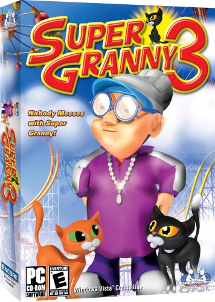
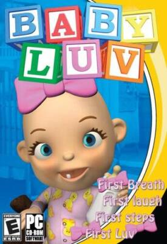
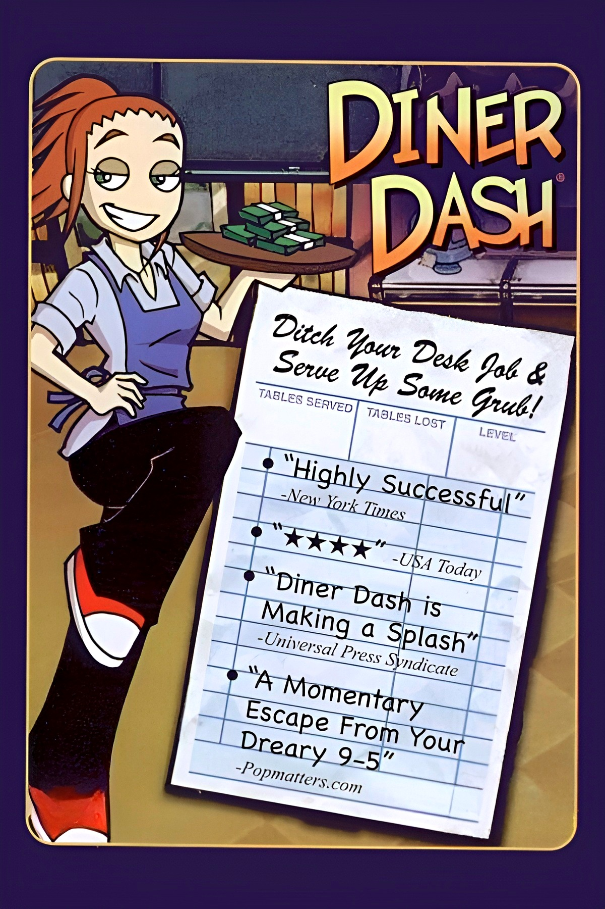
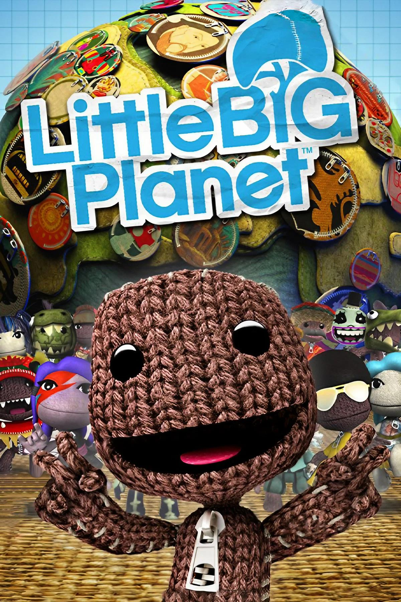
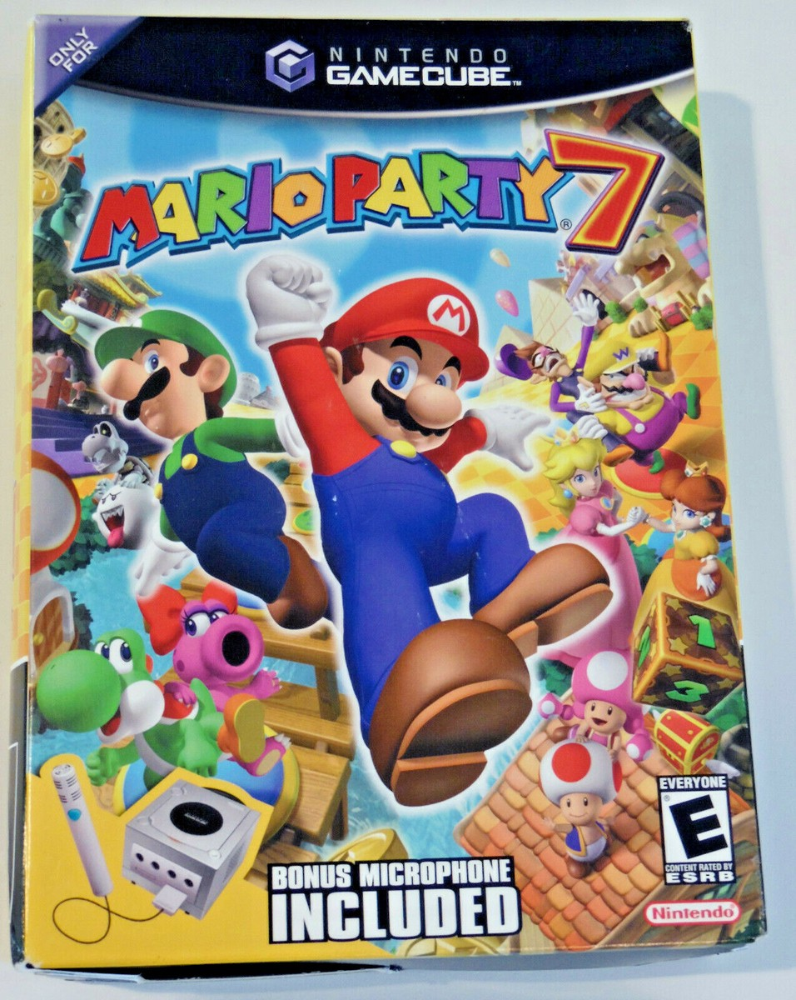
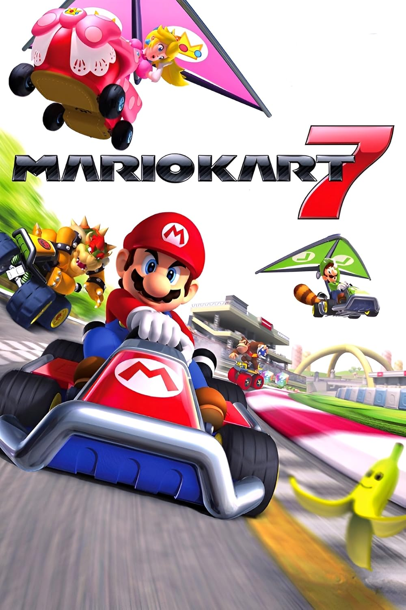

My Favorite Childhood Games
This collection will be about my favorite childhood games that I cherish. These games made my childhood and inspired me to learn about game design, art, code, and UX/UI.

Super Granny 3
PC Game | 2006 | Wildtangent Arcade
Super Granny 3 was my very first game I ever played on the computer with my sibilings. It was a simple game that required the player to save cats from different places. The graphics weren't the best, but the memories that were created we're something that nobody could replace.

Baby Luv
PC Game | 2007 | GameMill
Baby Luv is a PC game that allowed the user to take care of a baby that the player created. It was an easy game that didn't have complicated challenges, except when it was time to feed the baby. It was fun watching, playing, and making funny costumes for a pixelted baby.

Diner Dash
PC Game | 2003 | Gamelab
Diner Dash was my first game that stressed me out. I would also like to say that Diner Dash walked so overcooked could run because this was the true rage baiter. the way I would strugle to sit poeple down, only for them to change the color of the sits which would limit my chances of sitting more customers in that section. Diner Dash caused childhood me to genuinely freak out over a game.

Little Big Planet
PlayStation | 2008
Little Big Planet was my first game I played on a console and the first game I finished and replayed multiple times. I loved the way I could custoize evrything about sackboy and I also enjoyed how making different faces with my keypad, but the most fun of all was slaping people around or holding on to them when I was about to fall.

Mario Party 7
Nintendo | 2005
Mario Party 7 was a classic when it came to family night. It fired up our competitive side all while creating memories with my family. However, it all can to an end when we discovered that out disc was too scrached to play.

Mario Kart 7
Nintendo | 2011
This game was a classic when it came down to racing games or maybe I'm not too knowledgeable in racing games. However, it was fun racing people or setting new scores all while making new cars and unlocking new parts.